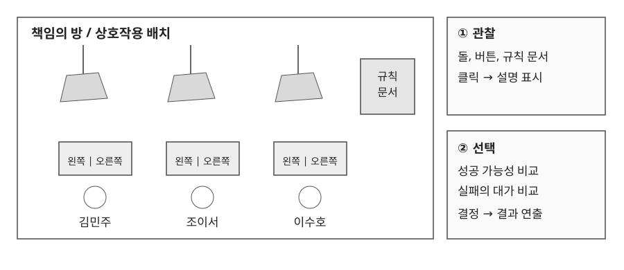

1.1 책임의 방, 선택 규칙
기획 의도
- 성공 가능성이 높은 선택과 타인에게 피해를 주지 않는 선택을 충돌시킨다.
- 버튼을 누르기 전에 성공 조건과 실패의 대가를 모두 전달한다.
- 선택 직후 돌이 떨어지는 결과를 보여 주어, 규칙이 실제로 적용되는 공간임을 체감하게 한다.

선택지 구성
| 구분 | 오른쪽 버튼 | 왼쪽 버튼 |
|---|---|---|
| 초기 열쇠 구성 | 3개 중 2개 | 3개 중 1개 |
| 실패 시 피해 대상 | 오른쪽 사람 | 선택한 본인 |
| 플레이어가 비교할 정보 | 높은 성공 가능성, 타인의 피해 | 낮은 성공 가능성, 자신의 피해 |
규칙 전달 순서
| 단계 | 화면과 대사 | 전달할 정보 |
|---|---|---|
| 탐색 | 돌, 버튼, 벽의 규칙 문서 확인 | 상호작용 대상과 위험 요소 |
| 해석 | 세 인물이 문서를 읽고 대화 | 열쇠 구성, 실패 시 피해 대상 |
| 선행 선택 | 김민주가 오른쪽 버튼 선택 | 확률을 우선하는 인물의 판단 |
| 선행 결과 | 돌 낙하, 성공과 실패에 따른 대화 | 규칙이 실제로 적용됨을 확인 |
| 플레이어 선택 | 오른쪽과 왼쪽 중 선택 | 책임을 감수할 대상 결정 |
| 결과 | 낙하 연출, 반응 대사, 문 개방 | 선택의 결과와 다음 방 진입 |
후속 확률은 남은 선택지에 따라 달라질 수 있으므로 초기 구성과 구분해 표시한다.